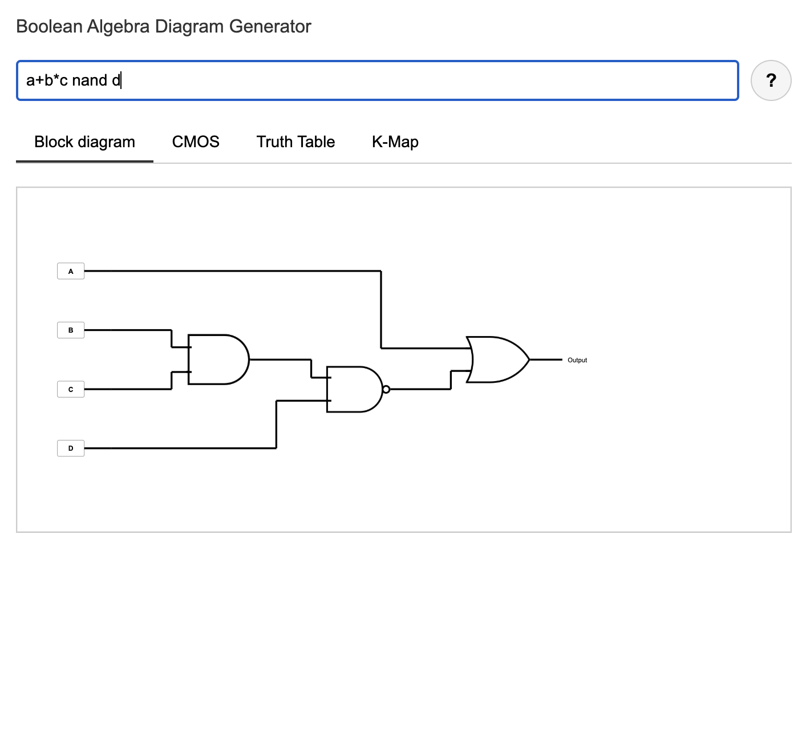
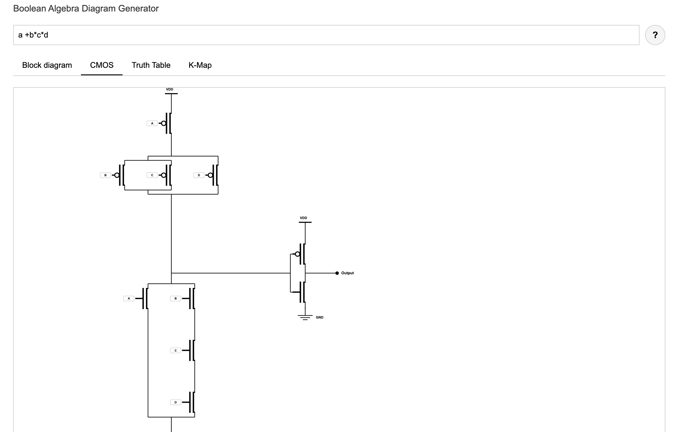

Boolean Algebra Visualizer Website
Boolean Algebra Visualizer is a small web app that turns boolean expressions into multiple visual representations, making digital logic easier to understand and teach.
The site is live at https://booleanalgebravisualizer.github.io/ .
What it does
At the top of the page there is a textbox where you can type boolean algebra expressions in several common notations, for example (a nor b) or !(a+b'c).
Below the input, the rest of the interface is organized into four tabs: the gate level block diagrams, the CMOS transistor diagram, and the corresponding truth table. These tabs cannot be edited directly; the only thing the user changes is the expression in the textbox, and all of the diagrams and tables update automatically.
Why I built it
I originally built this tool for my Computer Components and Operations course. Drawing CMOS transistor networks, logic gate diagrams, and large truth tables by hand or in tools like draw.io or Google Drawings was slow and repetitive, especially for lecture slides and homework with many variations on the same expression.
By generating these diagrams automatically, students and instructors can focus on understanding how the circuits work instead of spending time on drawing complex diagrams or making Karnaugh maps and truth tables for multi variable expressions, removing a lot of the tedious bookkeeping without doing the logical reasoning for you.
How it's built
The visualizer runs entirely in the browser using HTML, CSS, and JavaScript, and is hosted on GitHub Pages. The JavaScript parses the input expression into an internal representation, which is then used to build the logic gate diagram, synthesize the CMOS pull up and pull down networks, and enumerate rows of the truth table and K maps.
Issues faced
One of the hardest parts was designing a parser flexible enough to accept different syntaxes for boolean algebra while still catching mistakes in the input. Mapping that parsed expression into both gate level diagrams and CMOS transistor networks was also challenging, since the rules for series and parallel transistors must match the logical operations exactly, and creating a layout where the transistors, or logical gates and there connecting signal lines didnt overlap proved very difficuly


Reflection
This project was very fun and rewarding. Building the visualizer forced me to connect boolean algebra, truth tables, and CMOS transistor level implementations in a concrete way, and it gave me a tool I can keep improving and using to explain these concepts to others.